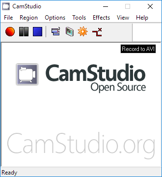

Free for Anyone. for Anything. Fovever
CamStudio is able to record all screen and audio activity on your computer and create industry-standard AVI video files and using its built-in SWF Producer can turn those AVIs into lean, mean, bandwidth-friendly Streaming Flash videos (SWFs).
You can download and use it completely free - yep - completely 100% free for your personal and commercial projects.